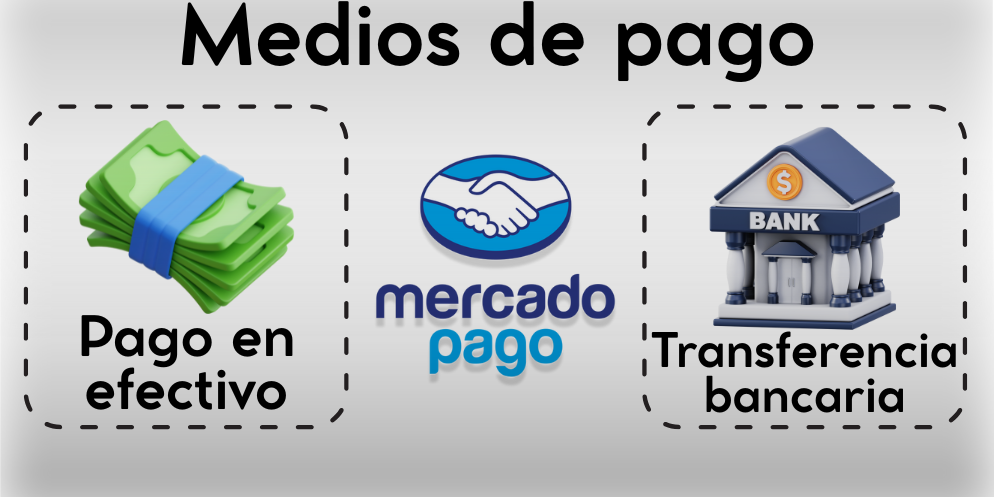

Servicio de Plomería Profesional
Reparaciones de urgencia las 24Hs.
¿Tenés una urgencia de plomería en Zona Oeste o Capital Federal? Somos especialistas en destapaciones, instalaciones y reparaciones de todo tipo, trabajando con rapidez, limpieza y garantía real. Nos movemos por toda la Zona Oeste (Morón, Castelar, Ituzaingó, Merlo, Moreno, Ramos Mejía y alrededores) y también CABA, brindando atención inmediata y personalizada.
Más de 15 años de experiencia nos respaldan, con cientos de clientes satisfechos. No esperes a que el problema empeore: consultanos ahora mismo por WhatsApp y resolvemos tu inconveniente en el acto.
Atención personalizada, trabajos garantizados y servicio en el acto. Estamos para ayudarte.
Medios de Pago Aceptados
- • Efectivo
- • Transferencias Bancarias
- • Mercado Pago
- • Tarjetas de débito
- • Servicio de urgencia las 24Hs.
- • Trabajamos en el GBA y CABA.
